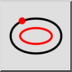

Παράλληλη καμπύλη (μέσω σημείου)
Γραμμή εργαλείων / Εικονίδιο:


Μενού: Σχεδίαση > Έλλειψη > Παράλληλη καμπύλη (μέσω σημείου)
Συντόμευση: E, G
Εντολές: ellipseoffsetthrough | eg
Πρόκειται για αυτόματη μετάφραση.
Γραμμή εργαλείων / Εικονίδιο:


Με αυτό το εργαλείο μπορείτε να δημιουργήσετε καμπύλες που είναι παράλληλες σε μια έλλειψη και διέρχονται από ένα καθορισμένο σημείο.